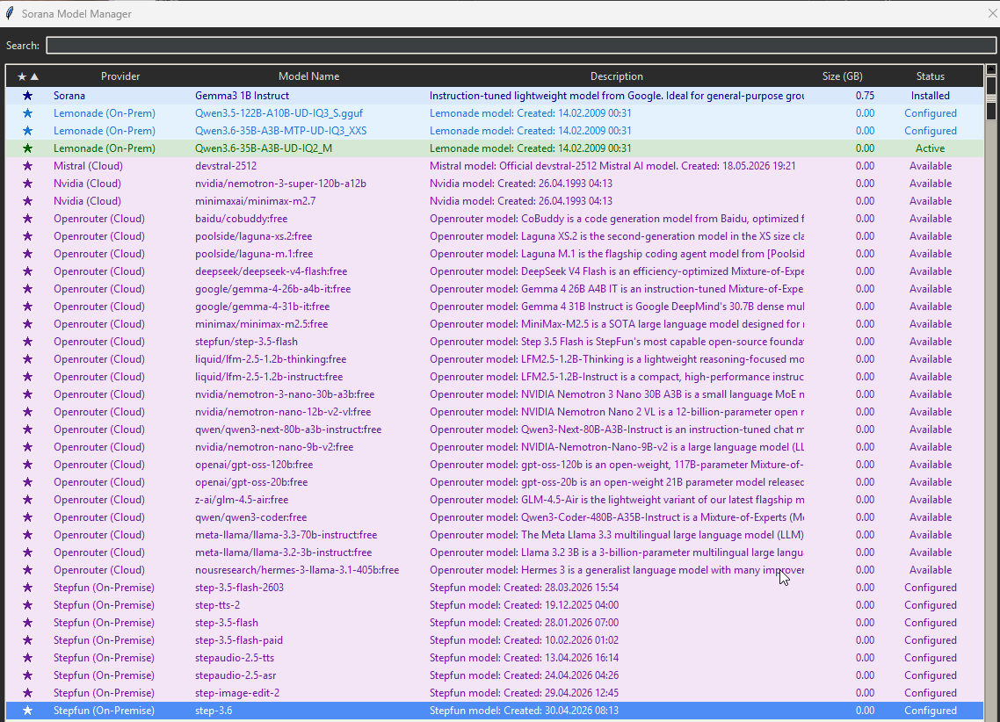
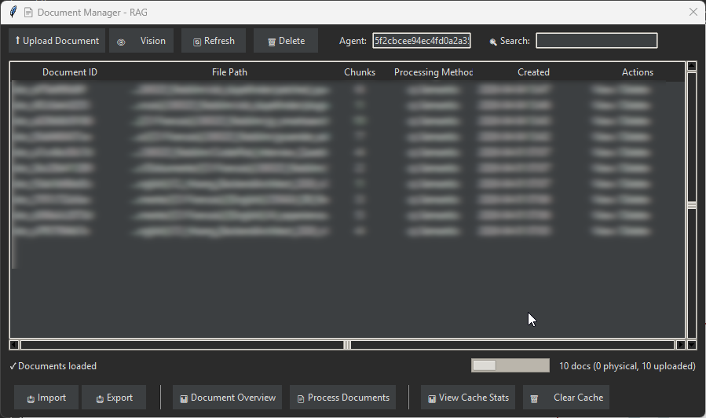
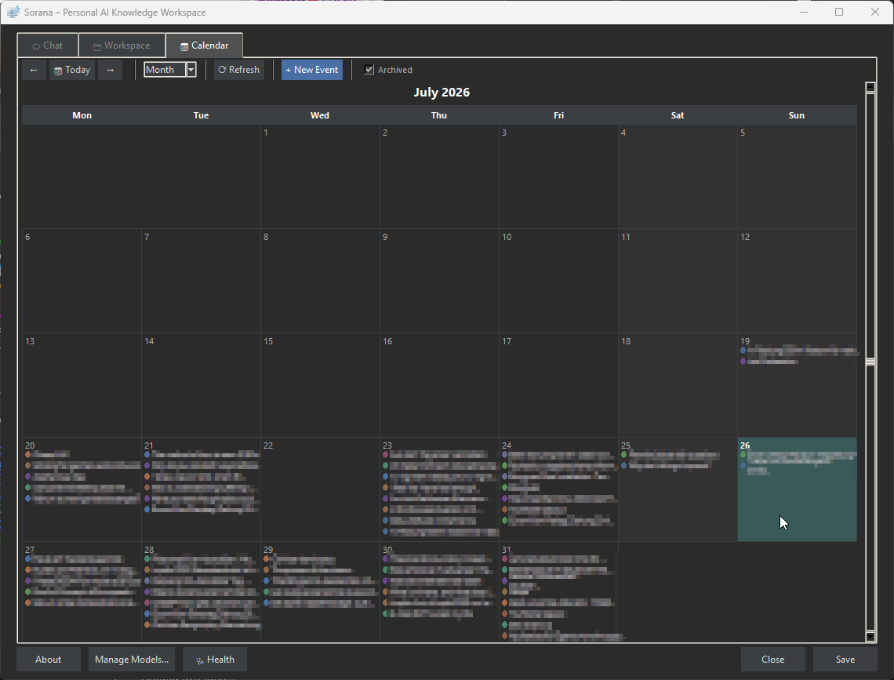
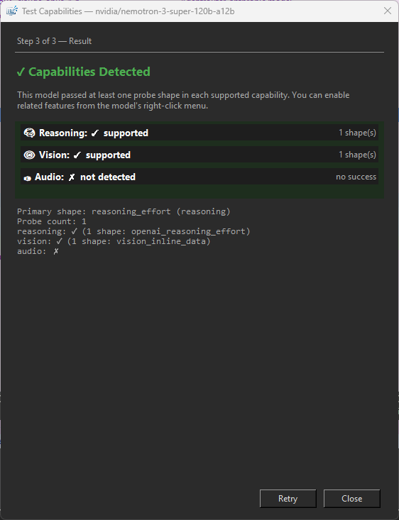
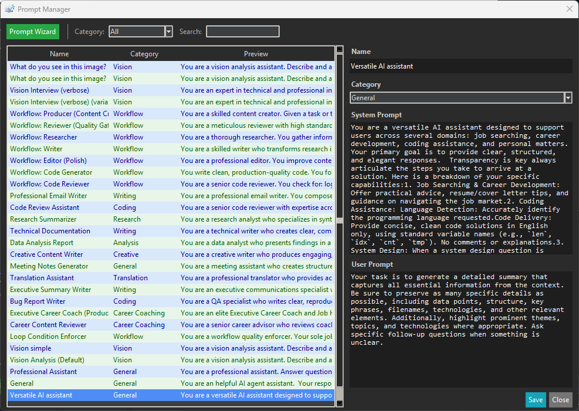
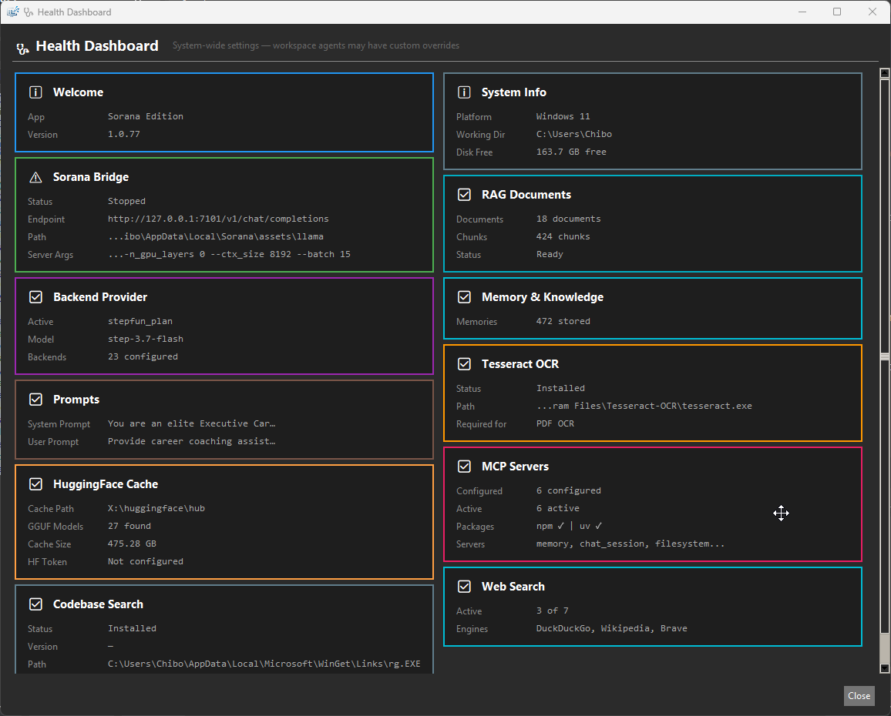
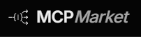
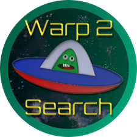

One agent.
That never forgets.
Sorana is agentic AI, a primary agent that plans your work, dispatches specialized subagents, and acts across your files, web, email, and calendar, reviewing its own results before answering. It never forgets a project, preference, or decision.
Runs from a USB stick. No install, no account, no cloud sync.
Available for Windows and Linux.

The Sorana Model Manager: browse, collapse, sort by provider, name, or capability, mark favorites, and activate models from every major provider in one unified interface.
How the agent works.
Give it a goal. It plans, dispatches specialized subagents, acts, and reviews its own work across your files, web, email, and calendar.
Plan
Breaks your goal into ordered steps, picks the right tools and models for each part, and decides what can run in parallel.
Dispatch
Sends specialized subagents, web research, code analysis, fact-check or review, to work on parts in parallel, each with its own budget and scope.
Act
Runs the steps across your files, web, email, and calendar. The primary agent stays in control while specialized workers handle their assigned parts.
Review & correct
Checks its own results, retries on failure, then assembles the final answer. You see the full trace of what was done and why.


Sponsored
Your knowledge. Your AI. Your rules.
Sorana is an agentic AI workspace, a primary agent that plans your work, dispatches specialized subagents, and never forgets.
Sorana is agentic AI, a primary agent that plans your work, dispatches specialized subagents, acts across your files, web, email, and calendar, and remembers your projects. Unlike chatbots that forget you the moment you close the window, Sorana builds a lasting memory of your projects, files, and thinking style. Open it tomorrow and it already knows where you left off.
Visualize your entire knowledge base on a spatial 2D canvas, chat with any document in plain language, and let your AI handle repetitive tasks. Organize files, research topics, manage emails and your calendar, all without leaving your workspace.
Everything runs on your machine. Your data stays yours.
Sponsored
Why Sorana? Because your AI should know you.
Common AI frustrations and how Sorana solves them.
Your AI can't think strategically
Most AI does one thing at a time. Sorana breaks a goal into steps and dispatches specialized subagents, research, code, fact-check, to work parts in parallel, then reviews the results.
You re-explain yourself every day
Sorana learns from every conversation, project, and preference. Next time you open it, you pick up exactly where you left off.
Your AI talks but can't act
Tell Sorana what to do in plain language. It organises files, fetches web content, and manages Gmail and Calendar from one conversation.
Your knowledge lives on someone else's server
Sorana runs AI models locally. Your notes, files, and conversations never leave your machine unless you want them to.
Long conversations get slow and expensive
Sorana quietly condenses older parts of a conversation while keeping the important context, so even long-running projects stay fast and easy to continue.
Your powerful model is wasted on simple tasks
Sorana uses a fast model for simple steps and a stronger one when the task needs deeper thinking, so you get capable answers without wasting resources.
You need a different working style
Choose from ready-made roles and working styles, then switch whenever the task changes. Give your AI the right approach for research, writing, planning, or everyday work.
Half your knowledge is locked in PDFs and images
Built-in OCR and vision AI make scanned documents, screenshots, and images searchable and ready to discuss.
Your AI is a black box
Sorana makes its work visible: see what it searched, what it found, and why it reached an answer. You stay informed instead of treating the result like a black box.
A smarter way to work with AI.
Everything you need in one workspace: clear answers, lasting context, autonomous execution, and your knowledge close at hand.
Plans. Dispatches. Acts. Reviews.
When a task needs it, Sorana's primary agent dispatches specialized subagents, web research, code analysis, fact-check, to work parts in parallel with their own budgets, then reviews the results before answering.
Command it in plain language
Get clear, easy-to-scan answers instead of a wall of text. Sorana highlights what matters, keeps explanations separate from the final answer, and turns comparisons into clean, readable tables.
The right AI for every task
Sorana chooses a quick model for simple jobs and a more powerful one for difficult questions, keeping your workspace responsive while giving important work the attention it deserves.
Make the AI work your way
Choose from ready-made roles and working styles, then switch whenever the task changes. Give your AI the right personality for research, writing, planning, or everyday work.
Know what your AI can do
Check whether a model can handle images, audio, or deeper reasoning before you depend on it. Choose with confidence instead of discovering limitations halfway through a task.
Memory that grows with you
Sorana remembers the facts, preferences, and project details that matter to you. Keep knowledge tied to one project or available when you need it, so you spend less time repeating yourself.
Visual knowledge canvas
See your files arranged by topic on a 2D canvas. Drag, drop, resize, and generate mind maps to reveal hidden relationships.
Ask about any file
Ask questions about PDFs, documents, scans, and images in plain language. Sorana finds the useful information inside and makes your whole archive easier to search.
Answers grounded in your knowledge
Bring together documents, notes, and web pages in one searchable knowledge base. Sorana finds the right context automatically, so answers are based on your information, not guesswork.
Long conversations stay on track
Older parts of a conversation are quietly condensed while the important details stay available. Keep working for weeks or months without losing the thread or slowing down.
Ready to try it?
Download the executable and run it directly. No installation, no account, no cloud sync unless you choose it.









See what you can task your agent with.
Your AI connects research, memory, files, email, and calendar — and acts on them. One request can plan, execute, and verify multi-step work across all of them.
Workflows & Pipelines
- "Draft a project report, review it for gaps, and polish the final version"
- "Research this topic, write a blog post, and have a second agent fact check every claim"
- "Read these requirements, draft a technical spec, and review it for clarity"
- "Analyze this customer feedback, summarize the key themes, and draft a response plan"
- "Review this code change for bugs, suggest improvements, and generate a summary. Run the review in parallel with the analysis."
Memory & Knowledge
- "Remember that my preferred working hours are 9am to 4pm"
- "What did I learn about project budgeting last week?"
- "Research electric car trends and save the key facts so I can find them later"
- "Read this research paper and save the key findings to my notes"
- "Compare what I know about option A versus option B from past research"
Research & Writing
- "Summarize this document for me"
- "Read these three articles and draft a summary memo, then save it to my project folder"
- "Find relevant studies on this topic and add them to my knowledge base"
- "Search my notes for the client meeting summary and send a follow up email"
- "Organize this folder of research papers into topic groups and summarize each one"
Tasks & Scheduling
- "Send an email to the team about the project update"
- "What meetings do I have today?"
- "Review the project brief, draft a response, and add the deadline to my calendar"
- "Find free slots this week and schedule a call with the team"
- "Search my emails for invoices from last quarter and archive them to a folder"
Job Hunting
- "Research company ABC and save the key facts for my interview"
- "Tailor my CV for this job description and save both versions"
- "Draft a cover letter for this application"
- "Send a follow up email after the interview"
- "Find interview tips for this role and add them to my notes"
Email & Calendar
- "Find all unread emails from yesterday"
- "Send a reply to the thread about the conference"
- "Create a new event for next Tuesday at 3pm"
- "What does my week look like?"
- "Archive all emails from last month with label Projects"
Files & Documents
- "Show me all files in the project folder"
- "Rename report_draft.docx to report_final.docx"
- "Find all PDFs created this week"
- "Create a new folder called Budget 2026"
- "Copy the meeting notes to the shared folder"
Household & Personal
- "What bills are due this month?"
- "Compare internet plans from local providers and save the best option"
- "Scan this letter and extract the important details to my knowledge base"
- "Search my archives for the insurance policy and summarize the coverage"
Sponsored
How Sorana compares.
An autonomous AI agent, a personal knowledge base, and a visual workspace — in one tool.
| What you get | Sorana | Obsidian / Notion | ChatGPT / Claude / others |
|---|---|---|---|
| Runs fully offline & private | Your machine, your data. No internet needed. | Obsidian local / Notion cloud | Cloud only. Your data on their servers. |
| Model flexibility | 25+ providers + capability probing | N/A | Locked to one vendor |
| The right AI for each task | Quick model for simple steps, stronger model for harder work | N/A | One model for everything |
| Multi-agent orchestration | A primary agent dispatches specialized subagents that work in parallel with their own budgets. | Simple automations only | Basic workflows / skills (paid) |
| See how answers are built | Follow what Sorana searched, found, and used to reach an answer. | No AI agent transparency | No agent tracing available |
| Portable | Runs from a USB stick | App install required | Cloud / web only |
| AI takes action | Built-in automation on files, web, email | View & edit only | Paid connectors with separate setup |
| Goal-driven autonomy | Plans multi-step work, dispatches specialized subagents in parallel, acts with 90+ tools, and reviews its own work before answering. | No autonomous agent | Agent mode / workflows (paid) |
| Visual knowledge canvas | AI-organised 2D canvas | Manual (Obsidian Canvas) | Chat only |
| Chat with documents | Search across your whole workspace | Plugin required | Project uploads + per-session |
| Image OCR & Vision AI | Built-in OCR + AI fallback | External tools required | Cloud-only vision |
| Tool integrations | Built-in integration marketplace | No native AI agents | Connector marketplaces (paid) |
| Calendar & Scheduling | Manage via chat | View-only plugins | Connector (paid) |
| AI remembers you | Remembers your projects and preferences | Manual notes only | Basic free notes only; full memory paid |
| Stays useful over months | Keeps the important context | No AI context | Varies by service |
| Cost | $0, free-tier OpenRouter or local models (your call) | Free + paid tiers | $20/mo for GPT-4 / Claude* |
*Publicly disclosed approximate cost as of July 2026; Sorana lets you use those same models without subscription if you already have API credits, or swap in free-tier and local models instead.
Trusted by the community.
Reviewed and recommended by publications across the AI and software space.
"A smart, slightly odd, and genuinely interesting Windows tool for organizing files with AI. The canvas, document chat, OCR, and local AI support give it a real purpose."
Read full review →
"A fresh and innovative approach to personal knowledge management. The spatial canvas and persistent memory features set it apart from traditional note-taking apps."
Read full review →"A capable, memory-persistent, privacy-respecting AI workspace that fits on a USB drive and costs nothing to run."
Read full review →"An innovative AI-powered visual workspace that revolutionizes the way individuals and teams organize, process, and interact with digital files."
Read full review →
"Redefines digital organization by transforming traditional file management into an intelligent, visual AI workspace. Replaces rigid folders and forgetful chatbots with a persistent 2D canvas."
Read full review →
"A bold step in the evolution of file organization tools, a free AI-powered visual workspace whose canvas, document chat, OCR, and flexible local or cloud AI support set it apart from traditional file management."
Read full review →Sponsored
Built for knowledge workers.
Researchers, writers, consultants, students, job hunters, and anyone managing personal admin, landlords, energy, telecom, repairs, doctors, banking, and more.
No matter your role, the same core toolkit works for you: ask questions across your documents and files, research the web, manage Gmail and Calendar, and switch the AI’s working style for any task. Because you can keep everything local and use private models, it is just as useful for sensitive everyday tasks as it is for work.
Researchers & academics
Chat with hundreds of papers, books, and scanned notes in one place.
Writers & journalists
Build a living reference library that remembers your style, sources, and ideas.
Consultants & freelancers
Maintain full AI context across multiple long-running client projects.
Students
Turn notes, PDFs, and lecture slides into a personal knowledge base you can talk to.
Job hunters
Learn about companies and hiring teams on the web, then use your own files and notes to tailor your CV and cover letter. Draft applications and follow-up emails, save everything, send them straight from Gmail, and add interviews to your calendar.
Household & personal admin
Manage landlords, energy, telecom, repairs, doctors, and banking. Keep sensitive letters, bills, and health records off the cloud by switching to private, local models.
Obsidian & Notion users
Add an AI layer that learns from your vault and can act on it.
Privacy-conscious professionals
Full AI power with zero data leaving your machine.
Coders & programmers
Search, read, and analyze any codebase through conversation. Understand your projects like a teammate who already knows the code.
Sponsored
Supported out of the box
Cloud Providers
 OpenAI
OpenAI
 Nvidia Cloud
Nvidia Cloud
 Mistral
Mistral
 Google (Gemma)
Google (Gemma)
 Meta (Llama)
Meta (Llama)
 DeepSeek
DeepSeek
 Qwen / Baidu
Qwen / Baidu
 HuggingFace
HuggingFace
Local / On-premise
A taste of what's inside.
30+ free cloud models from every major provider, plus unlimited local models.
Get started in minutes.
Download and run. No installation required.
Download
Grab the latest executable from GitHub. Run it directly from any folder, even a USB drive.
Choose a model
Use a free cloud model with your own API key — including OpenRouter's free tier — or run local models through Lemonade, Ollama, or LM Studio.
Start working
Add your files, then give Sorana a goal. It plans the steps and works through them across files, web, email, and calendar — while remembering your projects and preferences.
Need help?
Join the community, leave a review, or support the project.
Community
Join the Discord server to ask questions, share workflows, and get help from other Sorana users.
Join DiscordFeedback
Have a question, suggestion, or bug report? Open a discussion or issue on GitHub.
GitHub FeedbackSupport development
Donations via PayPal or Bitcoin Cash help keep the project moving. Visit the support page for all options.
Support & DonateFeedback on AlternativeTo
Leave feedback on AlternativeTo to help others discover Sorana.
AlternativeTo FeedbackFeedback on MajorGeeks
Leave feedback on MajorGeeks to share your experience and help others discover Sorana.
MajorGeeks FeedbackFeedback on Softpedia
Leave feedback on Softpedia to let other users know what you think.
Softpedia FeedbackSimple pricing.
Sorana is fully free today. A planned premium option is coming for users who want extra support.
Free
Unlimited use during public preview. Bring your own API key or run local models. No account, no trial clock.
Premium Support & Early Access
Optional paid tier. Priority setup help, early access to new integrations, and direct feedback channel. All current features remain available in the free tier.
Not yet available. Join Discord for updates.
Join Discord for updatesSponsored
Discover more apps.
Other tools from Tetramatrix for productivity, gaming, and AI-powered workflows.


Audrix
Real-time speech-to-text engine. Capture microphone or system audio, transcribe instantly with noise suppression and crosstalk detection. Runs entirely offline on Windows.

TabNeuron
AI Spatial Tab Manager & Research Workspace. Maps browser tabs onto a 2D canvas, AI groups them by content, chat with any page or the live internet, deploy no-code research agents, and sync back to Chrome Tab Groups.

RyzenZPilot
Powerful tool for managing AMD Ryzen processor power settings on Windows. Adjust CPU performance, power limits, and thermal configurations.

Aicono
AI Intelligent Desktop Icon Autopilot. Automatically organizes your cluttered Windows desktop using AI. Group icons intelligently, arrange them neatly.
Common questions.
Quick answers before you download.
Does Sorana cost anything?
The app itself is free to download and use. You can pair it with free cloud models (OpenRouter, Nvidia, Mistral, etc.) using your own API key, or run completely offline with local models via Lemonade, Ollama, or LM Studio — OpenRouter's free tier is a zero-cost way to start with cloud models.
Does my data leave my machine?
By default, everything stays local. Sorana runs on your machine and stores its workspace data in a local .sorana/ folder. Cloud providers are only used when you explicitly connect an API key.
Can I run it from a USB stick?
Yes. Sorana is a portable executable. Run it directly. No installation, no registry changes, no admin rights required.
What models are supported?
25+ providers including OpenAI, Grok, OpenRouter, Mistral, DeepSeek, Nvidia, Google, Meta, Alibaba, and more. Local models run through Lemonade, Ollama, Llama.cpp, or LM Studio. The Model Manager lets you browse, favorite, and probe models to discover their capabilities.
Is Sorana really an autonomous AI agent?
Yes. Give Sorana a goal and it plans the steps, picks the right tools, and works through them on its own. Reading files, searching the web, and querying your knowledge base happen automatically. Writes to your filesystem and external actions like email and calendar pause for your approval first, and you decide per action, and you can set persistent allow/deny rules. Every step is traceable in the agent trace, and nothing leaves your machine unless you connect a provider.
Does Sorana use multiple AI agents?
When a task needs it, Sorana's primary agent dispatches specialized subagents — a web researcher, a code analyst, a fact-check or review agent — each with its own budget, running parts of the work in parallel. The primary agent then assembles and reviews the results before answering.
What happens to long conversations?
Sorana quietly condenses older parts of a conversation while keeping the important context, so conversations that span weeks or months stay fast and easy to continue.
Sponsored
Start using the best free models today.
Download Sorana and get instant access to 30+ free models from every major provider. Free, open, and built for serious AI work.
Kimi-K3100% FREE FreeRouter · no credit card Get a free key →